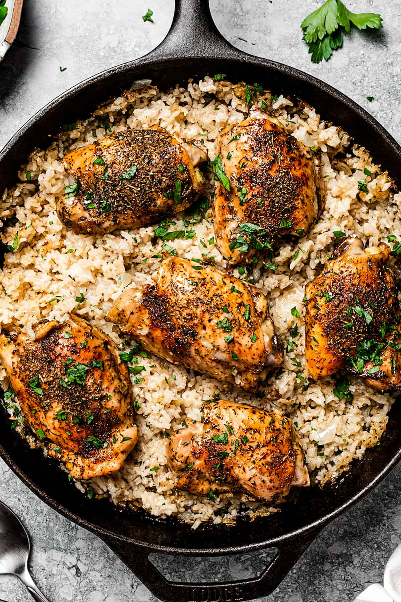

Chicken & Rice

Description
Chicken and rice is a common food combination in several cultures which have both chicken and rice as staple foods.
Ingredients
Chicken
- 5 bone in chicken thigh fillets, peel skin OFF
- 1 onion
- 2 cloves garlic (large)
- 2 tbsp (30g) butter
- 1 1/2 cups (270g) uncooked white rice
- 1 1/2 cups (375 ml) chicken broth/stock
- 1 1/4 cups (315 ml) water
Chicken Rub
- 1 tsp paprika powder
- 1 tsp dried thyme
- 1/2 tsp garlic powder
- 1/2 tsp onion powder
- 3/4 tsp salt
- Black pepper
Steps
- Preheat oven to 180°C/350°F.
- Scatter onion and garlic in a baking dish (about 10 x 15" / 25 x 35 cm), then place butter in the centre. Bake for 15 minutes (check at 12 minutes, mix if some bits are browning too much).
- Meanwhile, mix together Chicken Rub. Sprinkle on both sides of the chicken.
- Remove baking dish from the oven. Add rice then mix.
- Place chicken on rice. Then pour chicken broth and water around the chicken.
- Cover with foil, then bake for 30 minutes. Remove foil, spray chicken with oil (optional, gives chicken nicer finish), then bake for a further 20 minutes until liquid is absorbed.
- Stand for 5 minutes, then remove chicken and fluff up rice. Garnish with parsley or thyme if desired, serve and enjoy!